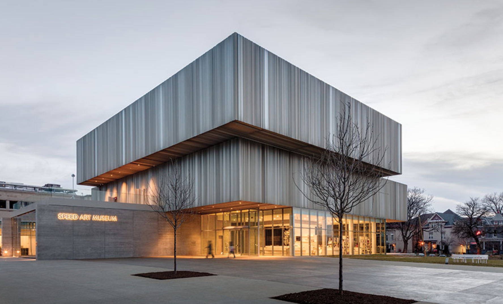

Cameron Drayton
Aspiring Architect
My name is Cameron Drayton and I am from Washington, D.C. I am
a first-year architecture student at Carnegie Mellon University. I am
passionate about architecture and hope to use my talents to help others.
Outside of architecture, I enjoy playing basketball, listening to music,
and spending time with my baby niece and nephew.